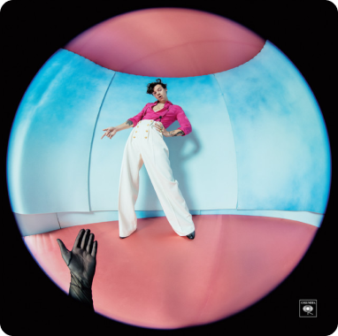
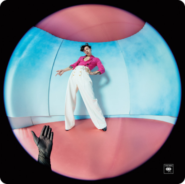

Treat People With
Kindness
Harry Styles
Maybe, we can
Find a place to feel good
And we can treat people with kindness
Find a place to feel good
I've got a good feeling
I'm just takin' it all in
Floating up and dreamin'
Droppin' into the deep end
And if we're here long enough
They'll sing a song for us
And we'll belong
Maybe, we can
Find a place to feel good
And we can treat people with kindness
Find a place to feel good
Giving second chances
I don't need all the answers
Feeling good in my skin
I just keep on dancin'
And if we're here long enough
We'll see it's all for us
And we'll belong
Maybe, we can
Find a place to feel good
And we can treat people with kindness
Find a place to feel good
And it's just another day (and it's just another day)
And if our friends all pass away (oh-oh, oh-oh)
It's okay (it's okay, it's okay)
It's okay (it's okay, it's okay, yeah)
Hey!
Here we go now
Maybe, we can
Find a place to feel good
And we can treat people with kindness
Find a place to feel good
All we ever want is automatic all the time
All we ever want is auto, auto all of the time
All we ever want is automatic all the time
All we ever want is auto, auto all of the time
Maybe, we can (all together now, one more time)
Find a place to feel good (oh, yeah)
And we can treat people with kindness (just a little bit of kindness)
Find a place to feel good (ow)